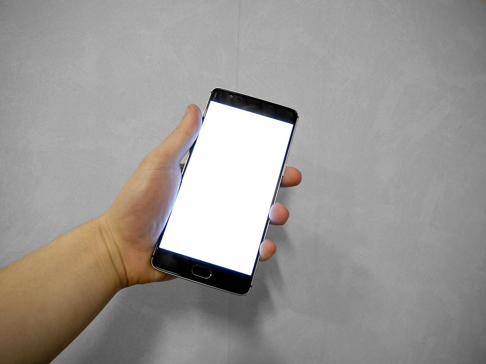
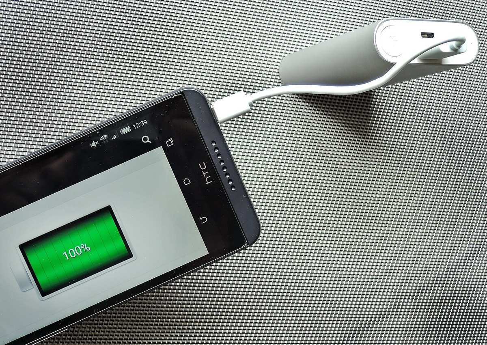

Cara paling efektif menghemat baterai HP Android adalah menurunkan kecerahan layar dan mempersingkat waktu layar mati ke 30 detik, menyalakan mode hemat daya bawaan, lalu membatasi aplikasi latar belakang yang boros lewat menu Penggunaan baterai. Tiga langkah ini saja sudah cukup membuat HP bertahan sampai malam, tanpa aplikasi tambahan apa pun.
Baterai HP Android cepat habis biasanya bukan karena baterainya rusak, melainkan karena tiga hal yang bekerja diam-diam sepanjang hari: layar yang terlalu terang dan terlalu lama menyala, aplikasi yang terus berjalan di latar belakang, dan fitur koneksi yang aktif padahal tidak dipakai. Mulai dari layar dulu karena dampaknya paling besar: turunkan kecerahan ke level yang masih nyaman, aktifkan kecerahan adaptif supaya HP menyesuaikan sendiri, dan ubah waktu layar mati ke 30 detik. Setelah itu, buka menu Baterai untuk melihat aplikasi mana yang paling boros, lalu batasi yang jarang kamu pakai dan biarkan sistem mengatur sisanya lewat Adaptive Battery. Terakhir, nyalakan mode hemat daya saat baterai mulai menipis, dan matikan Wi-Fi, Bluetooth, serta GPS bila tidak dibutuhkan. Semua langkah di bawah ini memakai setelan bawaan Android, jadi tidak perlu aplikasi tambahan apa pun.
Apa yang paling banyak menguras baterai HP Android?
Layar adalah penyedot daya terbesar di HP Android. Google menempatkan pengaturan layar di urutan pertama panduannya soal baterai, karena kecerahan dan durasi layar menyala menentukan sebagian besar konsumsi daya harian. Makin terang layar dan makin lama ia menyala, makin cepat baterai terkuras. Penyebab boros berikutnya adalah aplikasi yang berjalan di latar belakang: aplikasi chat, media sosial, dan marketplace sering menyinkronkan data sendiri padahal kamu tidak sedang membukanya. Terakhir ada fitur koneksi: GPS, Bluetooth, dan pencarian sinyal di daerah yang sinyalnya lemah membuat HP bekerja lebih keras.
Bagaimana cara menghemat baterai lewat pengaturan layar?
Semua setelan layar ada di satu tempat. Buka Pengaturan, lalu masuk ke menu Tampilan atau Layar, dan kerjakan empat hal ini:
1. Turunkan kecerahan layar ke level yang masih nyaman buat mata kamu. Kalau HP kamu punya kecerahan adaptif, nyalakan saja, supaya HP menyesuaikan terang layar sendiri. Google merekomendasikan kecerahan adaptif tetap menyala untuk pemakaian sehari-hari.
2. Persingkat waktu layar mati ke 30 detik. Bawaan pabrik sering disetel lebih lama, jadi layar bisa menyala sia-sia setiap kali HP kamu letakkan begitu saja.
3. Turunkan refresh rate bila HP kamu punya pilihan itu. Animasi memang terasa lebih mulus di refresh rate tinggi, tapi layar yang menyegarkan gambar lebih sering juga memakai daya lebih banyak.
4. Nyalakan mode gelap bila kamu lebih nyaman membacanya begitu, terutama di malam hari.

Foto: Santeri Viinamäki, CC BY-SA 4.0, via Wikimedia Commons
Aplikasi apa yang diam-diam menguras baterai?
Sebelum membatasi apa pun, lihat dulu datanya. Buka Pengaturan, masuk ke Baterai, lalu buka Penggunaan baterai. Di sana kamu bisa melihat aplikasi mana saja yang paling banyak memakai daya, beserta lama mereka berjalan di latar belakang. Sering kali pelakunya bukan aplikasi yang kamu pakai, melainkan aplikasi yang jarang dibuka tapi rajin menyinkronkan data sendiri.
Kalau sudah ketemu pelakunya, ketuk aplikasi itu dan pilih Batasi atau Dibatasi. Tapi jangan batasi aplikasi chat utama kamu, karena pesannya bisa datang terlambat.
Jangan menutup semua aplikasi dari menu Terbaru setiap selesai memakai HP. Android sudah mengatur aplikasi latar lewat Adaptive Battery, dan menutup lalu membuka ulang aplikasi justru membuat HP bekerja lebih keras. Biarkan sistem yang mengatur, kamu cukup membatasi aplikasi yang terbukti boros di menu Penggunaan baterai.
Apakah mode hemat daya benar-benar membantu?
Ya, dan ini jalan pintas paling gampang saat baterai sudah menipis. Mode hemat daya bawaan Android, yang di sebagian HP bernama Battery Saver atau Power Saving, membatasi sinkronisasi latar belakang, meredupkan layar, dan memangkas efek visual sekaligus. Cara menyalakannya: geser layar dari atas ke bawah dua kali lalu ketuk ikon Hemat daya.
Efek sampingnya, notifikasi bisa datang lebih lambat dan HP terasa sedikit lebih lambat, karena sistem memang sengaja menahan sebagian aktivitas. Untuk pemakaian biasa seperti chat dan browsing, efeknya hampir tidak terasa. Nyalakan saja saat baterai di bawah 20 persen atau saat kamu tahu tidak akan ketemu charger sampai malam.
Di HP Pixel ada mode yang lebih ekstrem: Extreme Battery Saver menjeda aplikasi yang tidak penting dan menurut Google bisa memperpanjang daya tahan sampai 72 jam. Cocok untuk keadaan darurat, misalnya saat bepergian jauh tanpa power bank.
Bagaimana cara mengisi daya supaya baterai awet bertahun-tahun?
Menghemat baterai hari ini dan merawat baterai jangka panjang itu dua hal berbeda. Kalau kamu ingin baterai tetap sehat setelah satu atau dua tahun dipakai, perhatikan cara mengisi dayanya.
Google menyarankan membatasi pengisian sampai 80 persen bila HP kamu punya fitur itu, karena baterai yang terlalu lama berada di 100 persen menua lebih cepat. Di HP Pixel 6a ke atas, fitur ini bernama Limit to 80 persen dan ada di Pengaturan, Baterai, Kesehatan baterai, lalu Optimalisasi pengisian. Di HP Samsung, fitur serupa bernama Battery Protection, dan di One UI 7 ke atas kamu bisa memilih batas 80, 85, 90, atau 95 persen.
Hindari mengisi daya sambil main game berat atau di tempat yang panas, karena baterai yang panas terkuras lebih cepat dan bisa rusak. Google juga menyarankan mengisi daya di tempat yang sejuk, sekitar 25 derajat Celsius, dan memakai adaptor bawaan HP.
Terakhir, jangan panik bila baterai HP lama terasa lebih boros. Baterai lithium-ion memang menua: Google menyebut baterai Pixel dirancang mempertahankan 80 persen kapasitas awalnya sampai sekitar 800 sampai 1.000 siklus isi daya, tergantung modelnya. Bila HP kamu sudah melewati angka itu, mungkin memang sudah waktunya ganti baterai, bukan ganti HP.

Foto: Mk2010, CC BY-SA 4.0, via Wikimedia Commons
Jadi, urutannya sederhana: bereskan layar dulu, batasi aplikasi yang boros, lalu nyalakan mode hemat daya saat perlu. Tiga langkah itu sudah cukup untuk membuat HP Android kamu awet seharian, dan kebiasaan isi daya yang benar membuatnya tetap sehat bertahun-tahun. Semua langkah di atas berlaku per November 2026.
Baca juga: Cara Mempercepat HP Android yang Lemot Tanpa Aplikasi Pembersih Tambahan, Cara Menghemat Kuota Internet HP Android Tanpa Aplikasi, dan Cara Memindahkan Kontak dari HP Lama ke HP Baru Tanpa Ada yang Hilang, atau lihat artikel Other lainnya dan artikel riset lain di Blog.
Sumber dan Info Resmi
Fakta dan langkah di artikel ini merujuk ke sumber berikut:
- Google Pixel Help: Fix a Pixel battery that drains quickly: Adaptive Battery dan Battery Saver sebaiknya tetap menyala; Extreme Battery Saver bisa memperpanjang daya tahan sampai 72 jam; fitur Limit to 80 persen tersedia di Pixel 6a ke atas; baterai Pixel 3 sampai 8 Pro dirancang mempertahankan 80 persen kapasitas awal sampai sekitar 800 siklus isi daya, Pixel 8a ke atas sampai sekitar 1.000 siklus; isi daya di tempat sejuk sekitar 25 derajat Celsius; baterai yang panas terkuras lebih cepat dan bisa rusak.
- Samsung Support: Battery Protection tips: mode Maximum pada Battery Protection membatasi isi daya ke 80, 85, 90, atau 95 persen; pilihan batas isi daya tersedia mulai One UI 7.0.
- Ahmadweb: langkah diurutkan berdasarkan dampak; kecerahan layar dan durasi layar mati paling berdampak; menutup semua aplikasi dari menu Terbaru tidak menghemat baterai.
- Pandutekno: 10 langkah; mengutip Google Pixel Help soal kecerahan adaptif dan waktu layar mati 30 detik.
- Pleasehere: 12 langkah praktis menghemat baterai HP Android.
- KapanLagi: panduan umum 7 bagian plus FAQ soal baterai Android.
- Qoo10: 10 pengaturan, menyebut baterai HP terbaru 5.000 sampai 6.000 mAh.